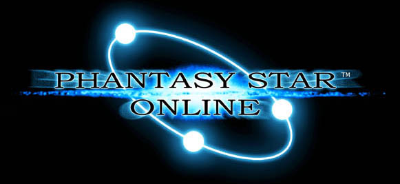

| 『PHANTASY STAR ONLINE』 |

東京ゲームショー 2000春 出展
＆
SEGAブース メインステージに登場！
『ファンタシースター オンライン(PSO)』が、
東京ゲームショウ 2000春に出展！
Dreamcast実機による展示だけでなく、
SEGAブース メインステージにも登場決定！
ソニックチーム・プロデューサー：中 裕司による
プレゼンテーションにより、
コンシューマーゲームマシン世界初！
ネットワークRPG『ファンタシースター オンライン』
が君の前で動き出す！
| SEGAブース メインステージ 『PSO』スケジュール | |
|---|---|
| 4月1日(土) | 14：25〜14：45 |
| 4月2日(日) | 13：10〜13：30 |
| 東京ゲームショウ 2000春 | |
|---|---|
| 場所 | 幕張メッセ （日本コンベンションセンター） |
| 日時 | ２０００年４月１日（土）・２日（日） １０：００から１７：００ |

東京ゲームショウ 2000春 |  『PSO』TOP | |
|---|---|---|
| ｜ Presented By SONIC TEAM 2000 ｜ |